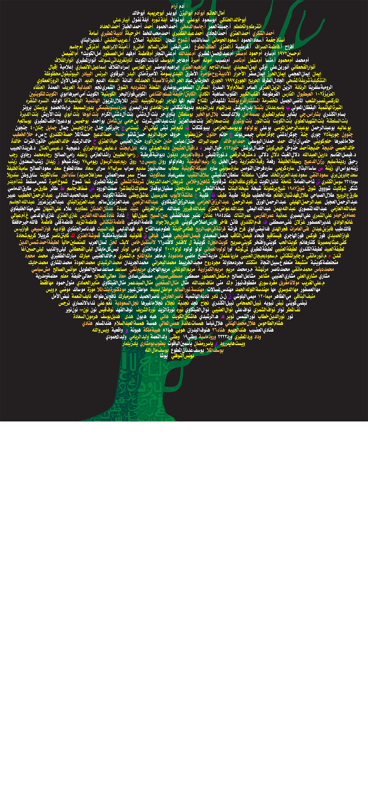

<audio id="tree" src="tree.mp3" preload="auto"></audio>


<script>

  function tree() {
        var audio = document.getElementById("tree");

        if (audio.duration > 0 && !audio.paused) {
            audio.pause();
            audio.currentTime = 0;
        } else {
            audio.play();
        }
    }
</script>


<map name="image-map">
  
  
    <area target="_blank" alt="" title="" href="" onclick="javascript:tree(); return false;"coords="233,111,390,29,536,8,719,34,868,108,1010,240,1091,424,1100,529,1068,748,998,878,928,954,844,1023,766,1055,662,1087,586,1094,516,1102,492,1152,486,1259,438,1294,392,1274,352,1281,374,1060,268,1019,153,922,79,818,24,654,13,533,27,404,69,302,152,184" shape="poly">
</map>

